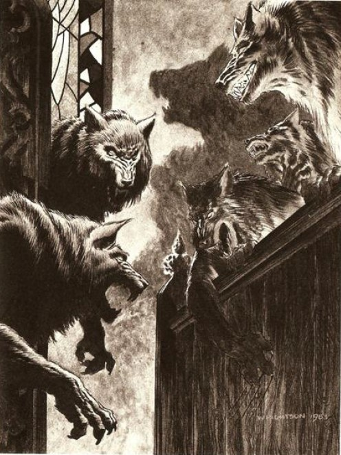

GRACE BAPTİST KİLİSESİ'NDE düzenlenecek olan Kutsal Pazar Buluşmasından bir gece öncesinde Peder Lowe, korkunç bir rüyadan kan ter içinde titreyerek uyanıyor ve gözünü açtığında kendini papaz evinin dar pencerelerine boş boş bakarken buluyordu. Pencerelerden yolun karşı tarafındaki kilisesini görebiliyordu. Ay ışığı papaz evinin yatak odası pencerelerinden kıpırtısız gümüş huzmeler halinde içeriye düşüyor ve peder, bir an için eskilerin sürekli bahsedip durduğu kurtadamı görmeyi bekliyordu. Sonra gözlerini kapattı ve bu batıl düşüncesinin affı için Tanrı'ya yalvardı, duasını "İsa Aşkına, amen" diye fısıldayarak bitiriyordu - annesi ona bütün duaların böyle bitirileceğini öğretmişti.
Ah, ama o rüya ...
Rüyasında yarın olmuştu ve Kutsal Buluşma Günü vaazım veriyordu. Kilise Kutsal Buluşma'nın olduğu Pazar günleri hep dolu olurdu (sadece en eskiler hâlâ Kutsal Pazar Buluşması'na Eski Pazar Buluşması diyorlardı) ama bu sefer çoğu Pazar olduğu gibi yan dolu ya da bomboş sıralara bakmak yerine dolu sıralara bakarak konuşuyordu.
Rüyasında, gerçekte nadiren eriştiği bir güçle, ateşli bir vaaz veriyordu (aslında, çok monoton bir sesle vaaz vermeye meyilliydi - ki bu, Grace Baptist Kilisesi'ne olan katılımın son on yıldaki şiddetli azalışının sebeplerinden biri olarak gösterilebilirdi). Bu sabah pederin diline sanki Pentecostal4 Ateşi değmişti. Hayatının en iyi vaazını verdiğinin farkındaydı, vaazın konusuysa şuydu: CANAVAR ARAMIZDA DOLAŞIYOR. Üstüne basa basa bu noktadan bahsederken yükselerek güçlenen sesini ve neredeyse şiirsel bir ritim kazanmış kelimelerini belli belirsiz fark ediyordu.
(4.- Pentecostal: [Pentecosl: Hıristiyanların Paskalya'dan elli gün sonra kutladığı Hamsin Yortusu.] Bu yortuya ait; çok duygusal ayinlere ve tutucu dini akideleri olan Hıristiyan mezheplerine ait. çn.)
Canavar her yerde, diyordu onlara. Büyük Şeytan herhangi bir yerde olabilir, diyordu. Bir lise balosunda olabilirdi. Dükkândan bir paket Marlboro ve Bic marka bir bütan çakmağı alıyor olabilirdi. Brighton'ın Eczanesi'nin önünde dikilip bir sandviç yiyerek 4:40 Greyhound'unun Bangor'dan gelişini bekliyor olabilirdi. Canavar bir konserde hemen yanınızda oturuyor veya Ana Cadde'deki Konuş ve Çiğne'de bir turta yiyor olabilirdi. Canavar, diyordu ses tonunu titreşen bir fısıltıya düşürerek ve mekândaki hiç kimse gözünü pederin üzerinden ayırmıyordu. Herkesi etkisi altına almıştı. Canavara dikkat edin çünkü size gülümseyip komşunuz olduğunu söyleyebilir, ah, ama kardeşlerim, onun dişleri keskindir ve gözlerinin yuvalarında nasıl da huzursuzca döndüğünü fark edebilirsiniz. O, bir canavar ve şimdi burada, Tarker's Mills'de. O-
Ama bu noktada birdenbire duraksıyor, etkili ve güzel söylemi yok oluyor, çünkü tam o anda, adamın güneşli kilisesinde korkunç bir şeyler oluşmakta. Kendisini dinleyen cemaati değişmeye başlıyor ve dehşet içinde fark ediyor ki onların hepsi, üç yüzü birden kurtadamlara dönüşmekte: genellikle beyaz, şişman ve bodur olan belediye meclisi baş üyesi Victor Bowle. . . derisi kahverengiye dönüşüp sertleşiyor ve kıllarla kararıyor! Piyano öğretmeni Violet MacKenzie . . . evde kalmış sıska kadın vücudu dolgunlaşıyor, ince burnu yassılaşıp yayılıyor! Şişman fen öğretmeni Elbert Freeman, daha da şişmanlıyor gibi görünüyor, üzerindeki parlak mavi takım parçalanıyor ve eski bir koltuktan fırlamış yayları andırırcasına kıllar fışkırıyor bedeninden. Etli dudakları, piyano tuşları büyüklüğündeki dişlerini göstererek birbirinden ayrılıyor!
Canavar, demek istiyor rüyasında Peder Lowe, ama kelimeler onu yan yolda bırakıyor, başı umursamazca yana eğilmiş olan Grace Baptist'in baş diyakozu5 Cal Blodwin, orta koridor boyunca ayaklarını sürüyüp hırlayarak yürür ve gümüş bağış tabağındaki paralar etrafa saçılırken dehşet içindeki Peder Lowe kürsüden geriye doğru sendeliyor. Violet MacKenzie, Blodwin'in üzerine atlıyor, koridorda birbirlerini ısırıp neredeyse insan sesi gibi çıkan çığlıklar atarak yuvarlanıyorlar.
(5.- Diyakoz: Kilise, cemaat işlerinde gönüllü olarak rahibe yardım eden kimse, çn.)
Diğerleri de onlara katılıyor ve beslenme saatindeki hayvanat bahçesini hatırlatan sesler yükseliyor. Lowe bir tür esrime içinde haykırıyor. "Canavar! Canavar her yerdedir! Her yerde! Her-" Ama sesi artık kendi sesine benzemiyor; anlaşılmaz, hırıltı benzeri sesler çıkarıyor ve aşağıya doğru baktığında siyah cüppesinin kollarından çıkan ellerinin pençelere dönüştüğünü görüyor.
Ve ardından uyanıyor.
Sadece bir rüya, diye düşünüyor, yeniden geriye doğru uzanırken. Tanrıya şükür, sadece bir rüya.
Ama sabah olduğunda, Kutsal Pazar Buluşması'nın sabahında, dolunaydan sonraki sabah kilisenin kapılarım açtığında gördükleri rüya değildi; gördüğü, yıllardır kilisenin kapıcılığını yapan Clyde Corliss'in deşilmiş olarak yüzükoyun kürsüden sarkan bedeniydi. Temizlik fırçası hemen yanında duruyor.
Peder Lowe sadece bir rüya olmasını dilese de bunlar rüya değildi. Ağzını açtı, nefesini kesen bir acı içinde derin bir soluk aldı ve çığlık atmaya başladı.
Bahar yeniden gelmişti - ve bu yıl, Canavar da onunla birlikte gelmişti.
